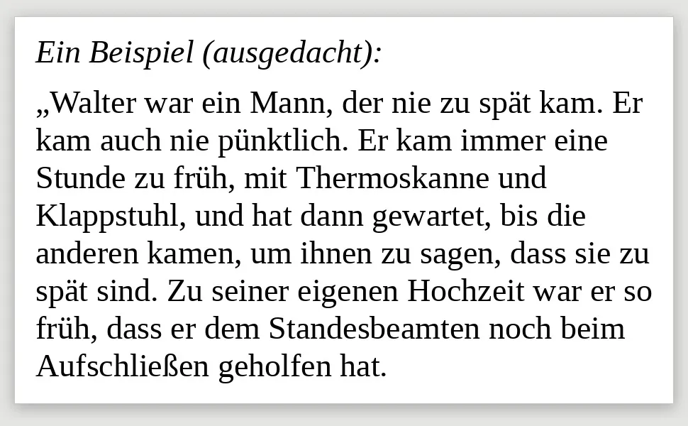
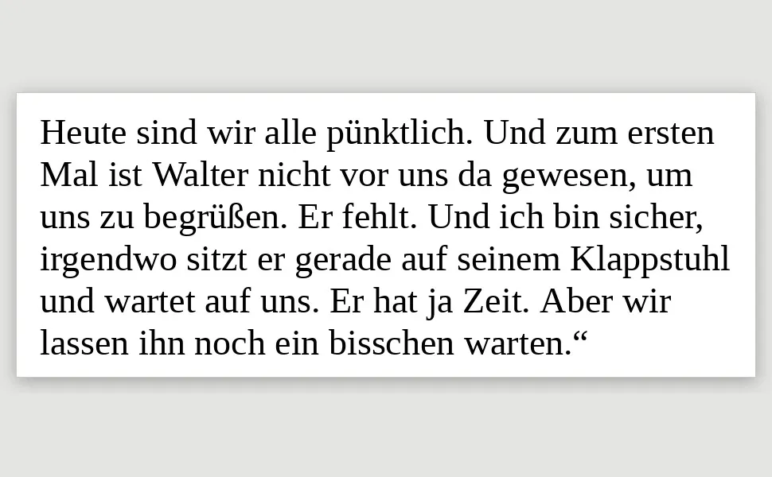

Schwarzer Humor
Warum derselbe Witz mal befreit und mal eine Feier sprengt, und wie du schwarzen Humor so einsetzt, dass alle lachen.
Öffnet amazon.de in einem neuen Tab.
Humor über Dinge, über die man eigentlich nicht lacht
Über 70 Witze, nach Themen sortiert und alle eigens geschrieben: Tod und Testament, Friedhof, Arzt, Familie, Bürokratie. Jeder trägt eine Dosis-Angabe, damit du weißt, wo er hinpasst. Dazu der Ampel-Check, mit dem du in ein paar Sekunden prüfst, ob es passt, und sieben Techniken für eigene Pointen.

Blick ins Buch: eine Trauerrede mit einem Lächeln
Das ausgedachte Beispiel stammt aus Kapitel 11 über Anlässe und steht im Taschenbuch auf Seite 83. Die Regel dahinter: über den Menschen, nie über den Tod.

Blick ins Buch: das Ende der Rede
Das Lachen kommt in die Mitte, nicht an den Schluss. So steht es dort in Regel vier, dem Aufbau.
Öffnet amazon.de in einem neuen Tab.